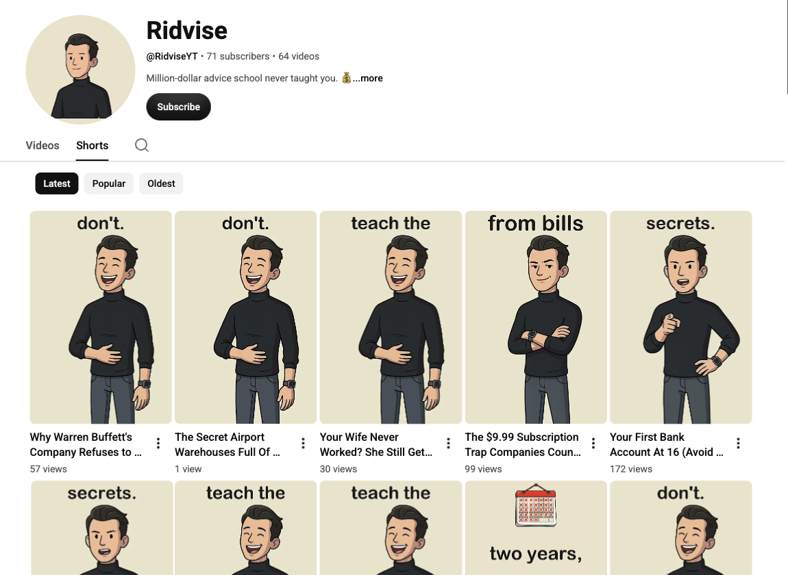
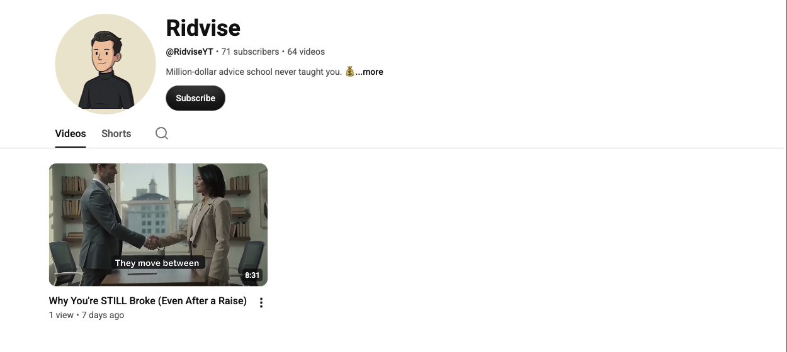
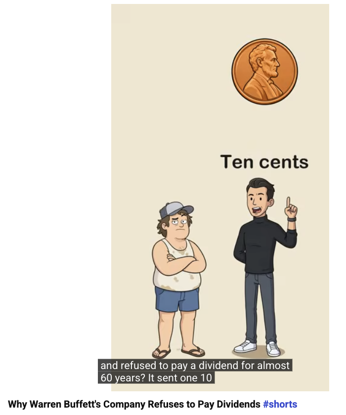

Supporting material for the YouTube API Services compliance review of the OAuth
client in Google Cloud project ridvise-publisher (project number 772198144313),
submitted by Anthony Benyameen, antbenyameen@gmail.com.
https://www.googleapis.com/auth/youtube.upload, which is write-only. It does not read,
search, download, scrape or store anyone else's videos, channels, comments, thumbnails or
statistics, and it displays no YouTube data to any end user. There is no public interface of any
kind — the tool has no UI beyond a command line on one laptop.UCWEzr4vn2ja8_cMbEyxEG9g). The channel and the Google Cloud project are both mine:
the project is under antbenyameen@gmail.com and the channel is under a second Google
account of my own, which is the account that authorizes this client. The uploader hard-codes that
channel id and refuses to report on a video that is not on it.videos.insert per day and the default 10,000 units — it is a small,
fixed, entirely predictable load.videos.list, so
our read quota stays at essentially zero.| When | Call | Purpose |
|---|---|---|
| Once, at setup | POST https://oauth2.googleapis.com/token |
Exchange the authorization code for a refresh token, stored locally with mode 600. |
| Before each upload | POST https://oauth2.googleapis.com/token (refresh) |
Get a short-lived access token. |
| Once per video | POST https://www.googleapis.com/upload/youtube/v3/videos?uploadType=resumable&part=snippet,status |
Start the resumable upload session; body carries the snippet and status below. |
| 8 MB at a time | PUT <resumable session URL> |
Send the file bytes, with retry on 5xx. |
| Optional, rarely | GET https://www.googleapis.com/youtube/v3/videos?part=status,processingDetails |
Confirm processing on our own video only. Normally skipped in favour of the public watch page. |
snippet: { title, description, tags, categoryId: "22" }
status: { privacyStatus: "public", selfDeclaredMadeForKids: false }
{
"title": "v026_buffett_no_dividend",
"channel": "Ridvise",
"music": "music/docubed_b.mp3",
"voices": {
"dumb": {
"provider": "elevenlabs",
"voice": "zSiMZcCo0oBh047sunsX",
"model_id": "eleven_multilingual_v2"
},
"smart": {
"provider": "elevenlabs",
"voice": "nzFihrBIvB34imQBuxub",
"model_id": "eleven_multilingual_v2",
"post_speed": 1.07
}
},
"captions": {
"hook": "Why has Buffett's company made billions and refused to pay a dividend for almost sixty years?",
"tiktok": "Why Buffett refuses to pay dividends #warrenbuffett #investing #dividends #personalfinance #moneytips",
"instagram": "Why Buffett refuses to pay dividends #warrenbuffett #investing #dividends #moneytips #personalfinance",
"youtube_title": "Why Warren Buffett's Company Refuses to Pay Dividends #shorts",
"desc": "Berkshire Hathaway has paid one dividend since Buffett took over: ten cents a share in 1967. Dividends in a regular account are taxed the year you get them, while kept earnings keep compounding until you choose to sell."
}
}
[
{
"who": "dumb",
"text": "Why has Buffett's company made billions and refused to pay a dividend for almost sixty years?",
"props": [
{
"at": "Buffett's company",
"photo": "Berkshire Hathaway"
},
{
"at": "made billions",
"prop": "mountain of green cash"
},
{
"at": "pay a dividend",
"prop": "hand receiving cash"
},
{
"at": "sixty years",
"prop": "hourglass"
}
]
},
{
"who": "smart",
"text": "It sent one. Ten cents a share in 1967. Buffett joked he was in the bathroom.",
"photo": "Warren Buffett",
"props": [
{
"at": "Ten cents",
"prop": "single copper penny"
},
{
"at": "Buffett joked",
"photo": "Warren Buffett"
},
{
"at": "bathroom",
"prop": "toilet"
}
]
},
{
"who": "dumb",
"text": "Wait, what? The most famous investor alive turns down free money?",
"props": [
{
"at": "famous investor",
"photo": "Warren Buffett"
},
{
"at": "free money",
"prop": "hand receiving cash"
}
]
},
{
"who": "smart",
"text": "It isn't free. He's dodging a tax most people never notice.",
"props": [
{
"at": "isn't free",
"prop": "price tag with an arrow going up"
},
{
"at": "dodging a tax",
"prop": "tax form torn in half"
}
]
}
]videos.insert, privacyStatus: "public".yt_upload.py, complete and verbatim. The OAuth client id and secret
are read from a local file outside any repository and are never printed or logged.
#!/usr/bin/env python3
"""Ridvise Publisher — uploads a finished Ridvise video to the Ridvise YouTube channel.
This is the uploader for the OAuth client under YouTube API Services review:
Google Cloud project "ridvise-publisher" (project number 772198144313), OAuth client
"Ridvise Composio uploader". It is a private, single-operator tool. It only ever uploads
videos that Ridvise produced itself, and only to Ridvise's own channel
(UCWEzr4vn2ja8_cMbEyxEG9g, youtube.com/@ridviseyt). It does not read, download, search,
scrape or store anyone else's content, and there are no other users.
Scope used: https://www.googleapis.com/auth/youtube.upload (write-only; it cannot read
another channel's data). `status` additionally needs youtube.readonly and is optional —
the pipeline normally confirms a public upload by fetching the watch page instead, so the
read quota stays untouched.
Client id / secret live in ~/ClaudeBrain/secrets/google_ridvise_publisher_oauth.env
(chmod 600, never printed, never committed). The refresh token is written next to them.
python3 yt_upload.py auth-url # one-time: print the consent URL
python3 yt_upload.py exchange <code> # one-time: store the refresh token
python3 yt_upload.py upload out/v031/v031_yt.mp4 \
--title "..." --description "..." --tags shorts,money --privacy public
python3 yt_upload.py status <video_id> # uploadStatus / processing result
Upload call: resumable POST to
https://www.googleapis.com/upload/youtube/v3/videos?uploadType=resumable&part=snippet,status
with snippet{title, description, tags, categoryId "22"} and status{privacyStatus,
selfDeclaredMadeForKids false}, then the file bytes PUT to the returned session URL.
One video per scheduled slot; at most nine uploads a day.
"""
import argparse, json, os, sys, time, urllib.parse
import requests
SECRETS = os.path.expanduser("~/ClaudeBrain/secrets/google_ridvise_publisher_oauth.env")
TOKENS = os.path.expanduser("~/ClaudeBrain/secrets/google_ridvise_publisher_token.json")
REDIRECT = os.environ.get("RIDVISE_OAUTH_REDIRECT",
"https://backend.composio.dev/api/v3/toolkits/auth/callback")
SCOPE_UPLOAD = "https://www.googleapis.com/auth/youtube.upload"
CHANNEL_ID = "UCWEzr4vn2ja8_cMbEyxEG9g" # Ridvise. Never upload anywhere else.
CHUNK = 8 * 1024 * 1024
def client():
"""Read the OAuth client id/secret. Returns them; never logs or prints them."""
cid = secret = None
with open(SECRETS) as f:
for line in f:
line = line.strip()
if line.startswith("GOOGLE_CLIENT_ID="):
cid = line.split("=", 1)[1].strip().strip('"')
elif line.startswith("GOOGLE_CLIENT_SECRET="):
secret = line.split("=", 1)[1].strip().strip('"')
if not (cid and secret):
sys.exit(f"client id/secret missing from {SECRETS}")
return cid, secret
def auth_url():
cid, _ = client()
return "https://accounts.google.com/o/oauth2/v2/auth?" + urllib.parse.urlencode({
"client_id": cid, "redirect_uri": REDIRECT, "response_type": "code",
"scope": SCOPE_UPLOAD, "access_type": "offline", "prompt": "consent",
"include_granted_scopes": "true"})
def exchange(code):
cid, sec = client()
r = requests.post("https://oauth2.googleapis.com/token", timeout=30, data={
"client_id": cid, "client_secret": sec, "code": code,
"grant_type": "authorization_code", "redirect_uri": REDIRECT})
r.raise_for_status()
tok = r.json()
if "refresh_token" not in tok:
sys.exit("no refresh_token returned — re-run auth-url (prompt=consent) and approve again")
fd = os.open(TOKENS, os.O_WRONLY | os.O_CREAT | os.O_TRUNC, 0o600)
with os.fdopen(fd, "w") as f:
json.dump({"refresh_token": tok["refresh_token"]}, f)
print(f"refresh token stored in {TOKENS}")
def access_token():
cid, sec = client()
try:
refresh = json.load(open(TOKENS))["refresh_token"]
except (FileNotFoundError, KeyError, ValueError):
sys.exit("no refresh token yet — run `auth-url` then `exchange <code>` once")
r = requests.post("https://oauth2.googleapis.com/token", timeout=30, data={
"client_id": cid, "client_secret": sec, "refresh_token": refresh,
"grant_type": "refresh_token"})
r.raise_for_status()
return r.json()["access_token"]
def upload(path, title, description, tags, privacy):
"""Resumable videos.insert. Returns the new video id."""
size = os.path.getsize(path)
body = {
"snippet": {"title": title[:100], "description": description,
"tags": tags, "categoryId": "22"},
"status": {"privacyStatus": privacy, "selfDeclaredMadeForKids": False},
}
at = access_token()
start = requests.post(
"https://www.googleapis.com/upload/youtube/v3/videos",
params={"uploadType": "resumable", "part": "snippet,status"},
headers={"Authorization": f"Bearer {at}", "Content-Type": "application/json",
"X-Upload-Content-Type": "video/mp4", "X-Upload-Content-Length": str(size)},
data=json.dumps(body), timeout=60)
if start.status_code == 429:
sys.exit(f"429 upload quota: {start.text[:300]}")
start.raise_for_status()
session = start.headers["Location"]
sent = 0
with open(path, "rb") as f:
while sent < size:
chunk = f.read(CHUNK)
end = sent + len(chunk) - 1
for attempt in range(5):
r = requests.put(session, data=chunk, timeout=600, headers={
"Content-Length": str(len(chunk)),
"Content-Range": f"bytes {sent}-{end}/{size}"})
if r.status_code in (200, 201, 308):
break
if r.status_code in (500, 502, 503, 504):
time.sleep(2 ** attempt)
continue
sys.exit(f"upload failed HTTP {r.status_code}: {r.text[:300]}")
else:
sys.exit("upload failed after 5 retries")
sent = end + 1
print(f" {sent}/{size} bytes", flush=True)
if r.status_code in (200, 201):
vid = r.json()["id"]
print(f"video id {vid} https://youtu.be/{vid}")
return vid
sys.exit("upload ended without a final response")
def status(video_id):
at = access_token() # needs youtube.readonly as well; optional check
r = requests.get("https://www.googleapis.com/youtube/v3/videos", timeout=30,
params={"part": "status,processingDetails,snippet", "id": video_id},
headers={"Authorization": f"Bearer {at}"})
r.raise_for_status()
items = r.json().get("items") or []
if not items:
sys.exit("no such video (or not ours)")
it = items[0]
if it["snippet"]["channelId"] != CHANNEL_ID:
sys.exit("refusing: that video is not on the Ridvise channel")
print(json.dumps({"id": video_id, **it["status"],
"processing": it["processingDetails"].get("processingStatus")}, indent=2))
if __name__ == "__main__":
ap = argparse.ArgumentParser(description=__doc__)
sub = ap.add_subparsers(dest="cmd", required=True)
sub.add_parser("auth-url")
p = sub.add_parser("exchange"); p.add_argument("code")
p = sub.add_parser("upload")
p.add_argument("file")
p.add_argument("--title", required=True)
p.add_argument("--description", default="")
p.add_argument("--tags", default="shorts")
p.add_argument("--privacy", default="public", choices=["public", "unlisted", "private"])
p = sub.add_parser("status"); p.add_argument("video_id")
a = ap.parse_args()
if a.cmd == "auth-url":
print(auth_url())
elif a.cmd == "exchange":
exchange(a.code)
elif a.cmd == "upload":
upload(a.file, a.title, a.description,
[t.strip() for t in a.tags.split(",") if t.strip()], a.privacy)
elif a.cmd == "status":
status(a.video_id)
The Ridvise channel and one of the uploaded videos, on YouTube:



Every video below was written, drawn, narrated and rendered by us, and put on the channel by this pipeline. All are public and live. These are the 57 recorded in our posting log; the channel shows the full count.
| Video id | Title |
|---|---|
VWjhl1A3B1Y | Why You're STILL Broke (Even After a Raise) |
4W84u13KomU | Is Working Two Jobs Actually Worth It? #shorts |
mj1j8MW7nRY | How To Make Real Money While You're Still In School #shorts |
l1rSJ-LS6Sc | The Case Supporters Make For Trump #shorts |
kOuWzmAbfzs | How To Leave Money To Your Kids (Without Losing Half) #shorts |
t-7Vj5wVcew | What Your Credit Score Actually Measures #shorts |
qa7_-NF38RE | The Rule of 72: How Fast Your Money Doubles #shorts |
AwyIvaATrWw | Why High Earners Still Go Broke #shorts |
4MHhiDxdvXk | Your First Bank Account At 16 (Avoid These Fees) #shorts |
SDOBgO65iyo | The $9.99 Subscription Trap Companies Count On #shorts |
CUYkid1jcaA | Your Wife Never Worked? She Still Gets Social Security #shorts |
AEm5qL4igzk | The Secret Airport Warehouses Full Of Billionaires' Art #shorts |
uCQ8mrZ9gg8 | Why Warren Buffett's Company Refuses to Pay Dividends #shorts |
rgxBLFXaNPM | Why McDonald's Is Actually a Real Estate Company #shorts |
jU2UqDQjy90 | Why Billionaires Borrow at 2% and You Pay 24% #shorts |
W1yH6376AnM | How a Gas Station Janitor Died With $8 Million #shorts |
2tyPltR9_vM | Why Turning Down a 401k Match Is Refusing Free Money #shorts |
q0TCznM-Z7s | Why Buying New Cars Keeps You Broke #shorts |
0zexvy_6a80 | How To Pay For College Without Drowning In Debt #shorts |
QZmREyc-iRI | How To Afford Rent On One Income #shorts |
-a4bhCvhG88 | Why Index Funds Beat 90% of Professionals #shorts |
gImpBW4s9J4 | Is It Too Late To Save For Retirement At 60? #shorts |
psnLXmmFQSw | Why You Need Six Months of Expenses Saved #shorts |
EXWRJ8ZLHGA | The Only Triple Tax-Free Account In America #shorts |
i-u0iUP8FGQ | Why Your Credit Card Balance Won't Go Down #shorts |
s7WC8iqTwjo | How To Build Credit Before You Turn 18 #shorts |
y00zDCaL4-A | Do You Owe Tax When You Sell Your House? #shorts |
i1QnHfuLdaA | The Number Where You Never Have To Work Again #shorts |
UnRmDqhobig | Costco Doesn't Make Money Selling You Food #shorts |
u8Y47OnR5eY | Waiting 10 Years Costs You $600,000 #shorts |
ozQDHD1HUrs | How To Actually Ask For A Raise #shorts |
g8mGsB5h9js | Why Your First Paycheck Is So Much Smaller Than You Expected #shorts |
X0Bob9isMI4 | The IRS Forces You To Drain Your IRA At 73 #shorts |
3Nj6DMN-MDo | Dealerships Make More On The Loan Than The Car #shorts |
5VeyTIpj4uU | Why Your Savings Account Is Losing Money #shorts |
FraYfcOmHZ8 | Why Rich People Never Pay Off Their Mortgage Early #shorts |
8Tj_nsXflp8 | Is Working Worth It After Daycare Costs? #shorts |
dMQfUALvFX0 | Do Teenagers Actually Have To File Taxes? #shorts |
1iSjIcE8aSo | Social Security At 62 vs 70: The Real Difference #shorts |
sDko-Yxm348 | The Latte Myth: Coffee Isn't Why You're Broke #shorts |
aFRjYmlE0uE | House Hacking: Live For Free While Tenants Pay Your Mortgage #shorts |
d4ATis5OWPs | Why 0% Interest Isn't Actually Free #shorts |
jR08MlVULeY | How To Build An Emergency Fund With Nothing Left Over #shorts |
KQ9l3WdiCno | Car Loan At 17 Or Buy A Cheap Car With Cash? #shorts |
I7tYfGKPSDg | Your Will Doesn't Control Your IRA #shorts |
ngrzviEBVAg | Stop Waiting for the Crash: Dollar-Cost Averaging #shorts |
pc4c5xc3QYw | Why Payday Loans Cost Almost 400% #shorts |
IZvheMuc1p0 | Why Your Bank Pays You Nothing (And Charges You 20%) #shorts |
w8vsiWBy1YQ | How Peter Thiel Turned $2,000 Into $5 Billion Tax Free #shorts |
pV52SL4-Kck | Why Stores Push Extended Warranties So Hard #shorts |
9j2aFwBAXxg | Why Your Credit Is Thin Even When You Pay Every Bill #shorts |
Hk8xq0K_q-g | Can You Actually Invest At 16? #shorts |
7GCNcn6wTjI | Rich People Don't Pay The Sticker Price #shorts |
UDT36zCbBrk | The Medicare Late Penalty That Never Goes Away #shorts |
IzhYJPSzX8M | Why Overdraft Fees Are The Worst Loan In America #shorts |
dJHrC6gRzwo | Why 9 Out Of 10 Stock Pickers Lose To A Boring Fund #shorts |
SvC5-pxgUOY | Never Pay The First Hospital Bill You Get #shorts |
Today these uploads go out through a third-party automation host whose YouTube connector runs on
its own Google Cloud project, shared by all of that host's customers. The per-project daily
upload cap is therefore consumed by strangers, and our evening uploads fail with HTTP 429
defaultVideoInsertPerDayPerProject through no fault of our own. Each one then has to be
re-uploaded after the midnight Pacific reset. Every row below is a real upload of ours that was
delayed this way, with the hash of the exact file that eventually went up:
| Failed at | Bytes | sha256 | Reason | Uploaded as |
|---|---|---|---|---|
| 2026-09-14 23:18 | 16015767 | 2929eed8af8334b3… | YouTube 'Can't process file' at 6 PM, then 429 on re-upload | FraYfcOmHZ8 |
| 2026-09-14 23:18 | 14043108 | 9beb6dce63d5964a… | 429 Video Uploads per day (Composio shared cap) at 11 PM | 8Tj_nsXflp8 |
| 2026-09-15 23:05 | 15511308 | 17f71afb7ad189ce… | 429 Video Uploads per day quota (defaultVideoInsertPerDayPerProject) at 11PM slo | jR08MlVULeY |
| 2026-09-16 11:19 | 16947983 | 97c0a44081511f20… | uploaded 11:10 as 5gLhMpTv6bk, then vanished: owner API returns no results, watc | ngrzviEBVAg |
| 2026-09-16 15:14 | 17435013 | 3a12535e5a6ea625… | YouTube 429 Video Uploads per day (3 PM slot 2026-09-16) | pc4c5xc3QYw |
| 2026-09-16 17:06 | 15353646 | 09c737a69fe8ef2b… | 429 Video Uploads per day (Composio shared cap), posted manually 2026-09-16 17:0 | IZvheMuc1p0 |
| 2026-09-16 18:11 | 8571434 | 79142396c08a13e9… | 429 Video Uploads per day (6 PM slot) | w8vsiWBy1YQ |
| 2026-09-16 20:59 | 12965035 | 8268d605cf36c9c7… | 429 Video Uploads per day (shared Composio project), 8 PM solo slot | pV52SL4-Kck |
| 2026-09-16 23:07 | 7105320 | 67d8eaa8769d6f80… | YouTube 429 Video Uploads per day (defaultVideoInsertPerDayPerProject) at 11 PM | 9j2aFwBAXxg |
| 2026-09-17 20:06 | 13724526 | 407f71f66d05da89… | 429 daily video upload quota exceeded on shared Composio project | dJHrC6gRzwo |
| 2026-09-17 23:07 | 7460732 | d9e23a586052936e… | 429 Video Uploads per day quota exceeded (defaultVideoInsertPerDayPerProject) | SvC5-pxgUOY |
Our own project with its own modest quota removes that shared-pool collision entirely. The usage does not grow: the same nine videos a day, to the same one channel.